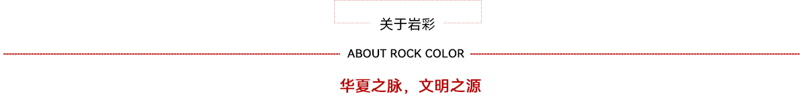

“岩彩画”的出现在我国可追溯至半坡原始古朴的彩陶，马王堆赋彩浓郁的帛画和漆画，鼎盛于唐代的工笔重彩。但是一度被元以后兴起的“文人画”、“水墨画”冲击成为民族的边缘画种。
“岩彩”这一古老而质朴的材质，作为绘画素材源自于原始人类的随意涂抹。
关于“岩彩”一词的来源，我认为“岩”即代表矿石的粉末，是指材质，“彩”即“色彩”，从内涵上讲“岩彩”就是源自中华民族文化内部的一种色彩绘画，从外延上讲“岩彩”就是与油画、丙烯画、版画一样深具材质特点的一个画种。因它有独立完整的色彩体系，有一套逐渐完善的审美标准，有一个最具时代意义的艺术思想“继承与创新、传统与现代”。
关于“岩彩”一词的来源，我认为“岩”即代表矿石的粉末，是指材质，“彩”即“色彩”，从内涵上讲“岩彩”就是源自中华民族文化内部的一种色彩绘画，从外延上讲“岩彩”就是与油画、丙烯画、版画一样深具材质特点的一个画种。因它有独立完整的色彩体系，有一套逐渐完善的审美标准，有一个最具时代意义的艺术思想“继承与创新、传统与现代”。
不可错过的岩彩Don't missmore>>